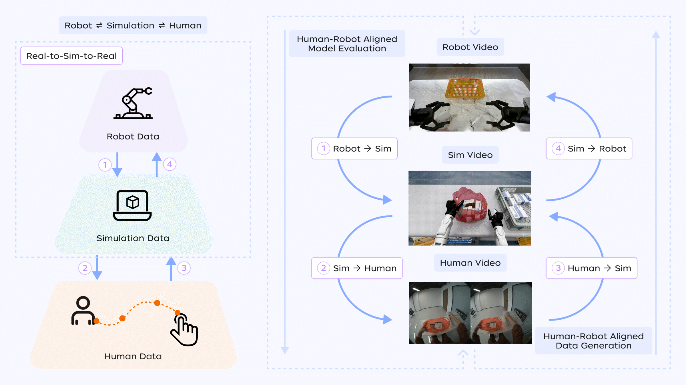
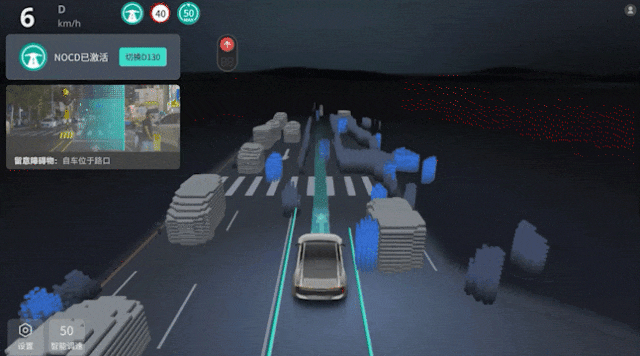
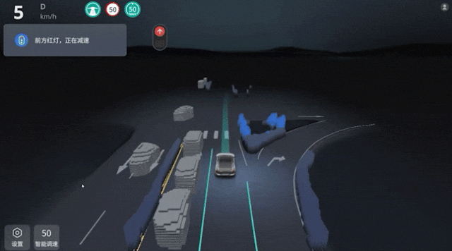

简介
About2025 年起就职于京东探索研究院，负责具身基础模型（Embodied Foundation Model）预训练， 方向包括机器人 VLA（视觉—语言—动作模型）与世界模型（World Model）。 作为核心研发人员参与的 JoyAI-RA 具身基础模型，在仿真与真机任务上，超越 Physical Intelligence 团队的 π0.5 模型。
2022 至 2025 年任大疆车载（卓驭）智驾 VLA 方向负责人，业界首次将数十亿参数的多模态大模型部署到 Thor 芯片上， 相关能力在 2025 上海车展展示，并获得包括一汽红旗等多个主机厂的认可。
2022 年于清华大学取得计算机硕士学位，获清华大学校级优秀毕业生、 清华大学优秀硕士学位论文及研究生国家奖学金，现任清华大学深圳计算机分会理事； 本科毕业于中山大学软件工程专业。曾在商汤科技、腾讯微信、华为诺亚方舟实验室等担任研究实习生。 研究涵盖具身智能、世界模型、多模态大模型、视觉感知等方向，谷歌学术引用达到 500 余次，共发表论文 11 篇，其中第一作者 5 篇， 发表于 ICLR、ECCV、ACM MM、WWW 等会议，并担任机器人领域会议 CoRL 2026 领域主席（Area Chair）。
主要项目
Selected projectsJoyAI 具身智能系列
围绕机器人自主能力的基础模型工作：JoyAI-RA 0.1 为机器人自主基础模型， 据仿真与真机测试结果优于 π0.5；JoyAI-Sim 为面向「具身数据金字塔」的仿真互转工具链， 业界首个提出贯通人类数据、仿真数据与真机遥操数据的完整转换链路； 并开展「从视频学习物理世界」的世界模型研究。
JoyAI-RA 0.1 Demo
JoyAI-RA 0.1 机器人自主能力演示
JoyAI-Sim Demo

具身数据金字塔转换工具链演示
智驾端到端 VLA 方案
曾任大疆车载（卓驭）智驾 VLA 方向负责人，负责智驾端到端 VLA 方案， 将大模型部署到 Thor 芯片上，相关能力在 2025 上海车展展示，并获得包括一汽红旗等多个主机厂的认可。
卓驭 VLA 场景理解 Demo


荣誉选摘
Selected honors论文发表
Selected publications加粗为本人 · ＊ 表示共同第一作者